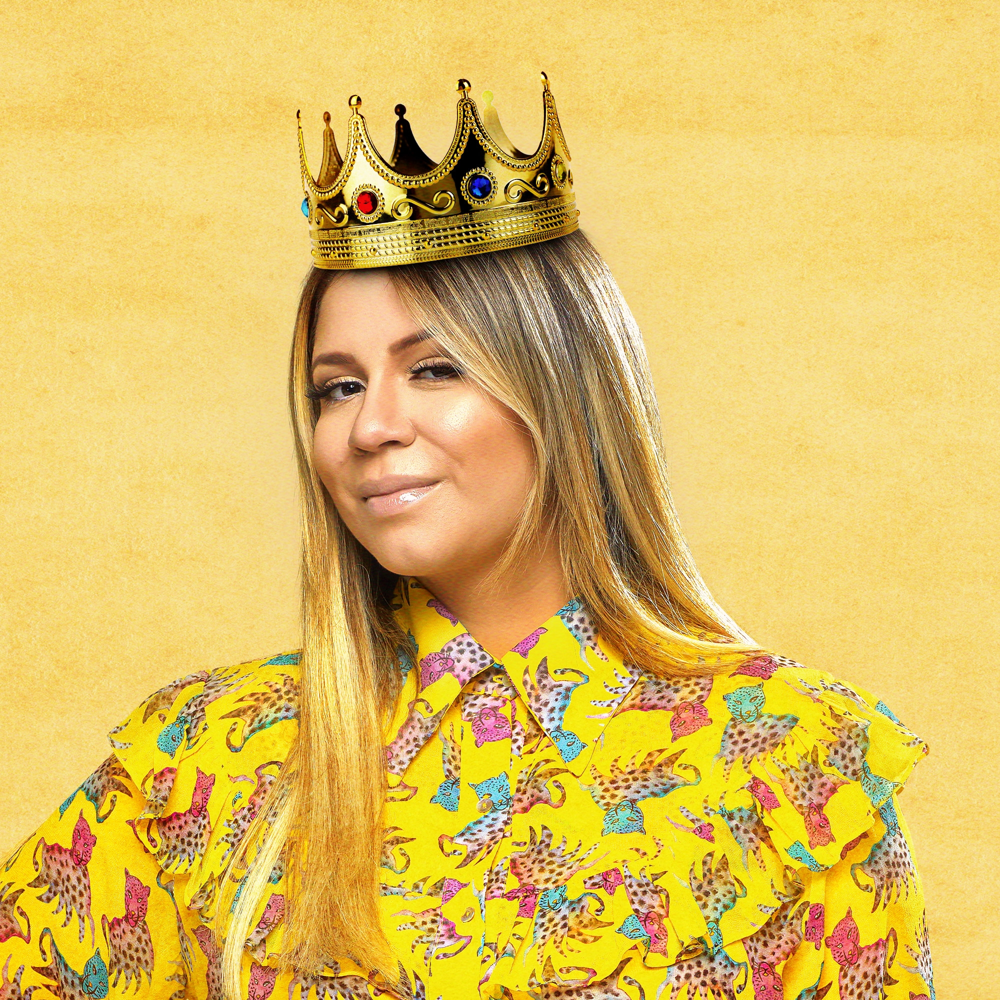

Famosa e reconhecida como a “rainha da sofrência”,
Marília Mendonça foi uma cantora e compositora que
escrevia e cantava músicas sobre amor, sofrimento e
traição. Reconhecida como líder do subgênero musical feminejo
— sertanejo por mulheres —, sua contribuição para o empoderamento
feminino revolucionou o universo da música sertaneja, ela foi um
dos principais nomes da música brasileira entre os anos 2015 e 2021.
Sua Origem...
Marília nasceu em Cristianópolis no dia 22 de julho de 1995,
porém, mudousse para Goiânia ainda criança onde permaneceu até o
final da sua vida. Desde criança, a goiana mostrou que tinha dom
para ser cantora. Marília Mendonça era da religião evangélica e
começou a cantar na igreja que frequentava. Quando tinha 12 anos de
idade começou a compor, passando a escrever músicas para vários cantores,
entre eles João Neto & Frederico,Jorge & Mateus,Cristiano Araújo entre
outros. Já adolescente, passou a cantar no bar comandado pela sua família.
Um tempo depois, Marília Mendonça foi descoberta por uma produtora musical.
Sua Estreia e sua Canções
Se lançou como cantora em janeiro de 2014, através do seu primeiro
EP homônimo.Em junho de 2015, foi lançado a canção "Impasse", primeiro
single da cantora que contou com a participação da dupla
Henrique & Juliano.Em março de 2016, lançou seu primeiro álbum
intitulado Marília Mendonça que contou com músicas como
"Sentimento Louco" e "Infiel" e a participação da dupla
Henrique & Juliano."Infiel" se tornou a segunda canção mais executada
nas rádios do Brasil naquele ano, fazendo a Mendonça ganhar
reconhecimento nacional. Em outubro, foi lançado um EP acústico ao vivo
nomeado Agora É Que São Elas, com faixas de sucesso
anteriores e tendo como carro-chefe a canção "Eu Sei de Cor".
Em janeiro de 2017, lançou outro EP homônimo com quatro faixas inéditas.
Em março, foi lançado seu segundo álbum intitulado Realidade, que teve
como músicas de trabalho "Amante Não Tem Lar" e "De Quem É a Culpa?"
e contou novamente com a participação da dupla Henrique & Juliano.
Em novembro, lançou o single "Transplante" em parceria com dupla
Bruno & Marrone.Em julho, Mendonça conquistou o posto de artista
brasileira mais ouvida no YouTube, ficando em 13º lugar no ranking
mundial.
Em abril de 2018, lançou o álbum intitulado Agora É Que São Elas 2,
em colaboração com a dupla Maiara & Maraisa. O álbum conta com as
canções "Ausência" e "Estranho", além de "A Culpa é Dele" com a
participação de Maiara & Maraísa.

Em fevereiro de 2019, foi lançado o terceiro álbum ao vivo da cantora,
intitulado Todos os Cantos, que tem músicas como "Ciumeira", "Bem Pior
Que Eu" e "Bebi Liguei". O projeto foi idealizado por Marília, que tinha
a intenção de gravar uma música em cada estado do Brasil. Em março, foi
divulgado pelo serviço de streaming Spotify, que a cantora ocupa o
primeiro lugar no TOP 10 das mulheres mais ouvidas do Brasil na plataforma.
Em maio, foi lançado o segundo volume do álbum Todos os Cantos.
O terceiro volume do DVD foi lançado em agosto. Em janeiro de 2020,
lançou o single "Graveto". Em fevereiro de 2020, lança o single
"Tentativas". Em maio de 2020, foi a vez do single "Vira Homem".
Em setembro de 2020, lançou o álbum intitulado Patroas, em parceria
com a dupla Maiara & Maraisa. O álbum conta com composições inéditas
das cantoras e regravações de grandes sucesso do sertanejo. Teve como
músicas de trabalho "Quero Você do Jeito Que Quiser", "10 de Setembro"
e "Coração Bandido". Em 2021, foi indicado ao Grammy Latino de Melhor
Álbum de Música Sertaneja. Em 22 de agosto de 2021, a cantora Luísa
Sonza lançou um remix da canção "Melhor Sozinha" com a participação
de Marília.Em outubro de 2021, lançou o álbum intitulado Patroas 35%,
mais uma colaboração da cantora com a dupla Maiara & Maraisa. O álbum
conta com as canções "Todo Mundo Menos Você", "Esqueça-Me Se For Capaz"
e "Motel Afrodite".
Sua Morte
No dia 5 de novembro de 2021, Marilia Mendonça embarcou em um táxi
aéreo, na cidade de Goiânia, junto de seu produtor e também assessor,
com destino cidade a Caratinga, interior de Minas Gerais, onde faria
uma apresentação.O avião que transportava a cantora caiu na zona rural
de Piedade de Caratinga, cidade vizinha a Caratinga, após atingir um
cabo de uma torre de distribuição de energia, a poucos quilômetros do
aeroporto onde faria o pouso.Todos os ocupantes do avião, incluindo o
piloto e o copiloto da aeronave morreram. Marilia Mendonça morreu no
auge da sua carreira de cantora e compositora causando um grande
impacto em rede nacional e internacional
Legado e Homenagens
Seu legado além das belas canções, são suas falas abertamente sobre
independência feminina, autenticidade e carisma.
Marília continua sendo lembrada em numerosas homenagens e memoriais.
Na cerimônia dos Grammys de 2022, a cantora brasileira apareceu no
segmento In Memoriam.
Para eternizar a história de Marília, o Mercado da 74 de Goiânia
passou a ser denominado Centro Cultural Mercado Popular da Rua 74
Marília Mendonça. Em Caratinga, cidade em que Marília iria se
apresentar à ocasião em que sofreu o acidente, anualmente a cantora
vem sendo homenageada na data em que faleceu e tramita a alteração
do nome do Parque de Exposições João da Costa Mafra para Parque de
Exposições Marília Mendonça e João da Costa Mafra.